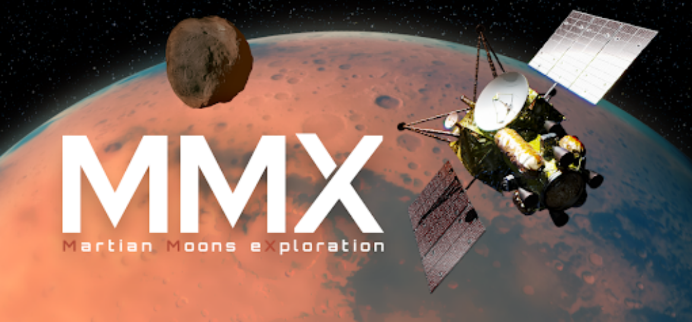

Autres Vaisseaux:
« Martian Moons eXploration » (MMX)

Informations de Base:
- Nom: « Martian Moons eXploration » (MMX).
- Lancement: estimé pour 2024, sur une fusée H-3 (un propulseur auxiliaire construit par le Mitsubishi Heavy Industries).
- Cette fusée entrera en orbite autour de Mars en 2025, puis entrera en orbite quasi-satellite autour de Phobos pour récupérer un échantillon de la surface de Phobos.
- JAXA va collaborer avec le Centre National d'Études Spatiales (CNES) de la France et le Centre Aérospatial allemand (DLR) pour développer un atterrisseur similaire à celle sur sa sonde spatiale précédente, Explorateur d'Astéroïde Hayabusa-2.
Mission:
La sonde spatiale sur Phobos (une exploration de la lune martienne - MMX) a un but d'observer les matériaux de Phobos. Cette mission d'environ 417 millions de dollars est guidé par l'Agence japonaise d'exploration spatiale (JAXA). La sonde spatiale clarifiera l'origine et l'évolution de la sphère martienne, y compris Phobos et Deimos, les lunes de Mars. Avec la gravitation de surface de Phobos étant à peu près un millième de celle de la Terre et un diamѐtre de 23 kilomètres, cette lune agirait peut-être comme base pour des aller-retours entre Terre et Mars. La fusée retournera vers la Terre en 2029. Les scientifiques veulent répondre à la question: « Les lunes martiennes sont-elles des astéroïdes capturés, ou simplement des fragments qui se sont fondus après une collision avec Mars? ».